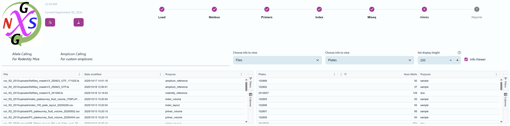
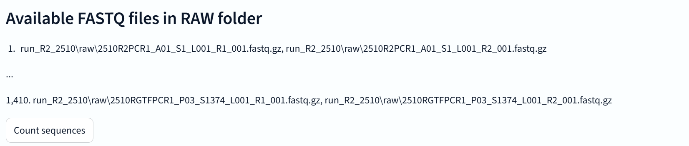
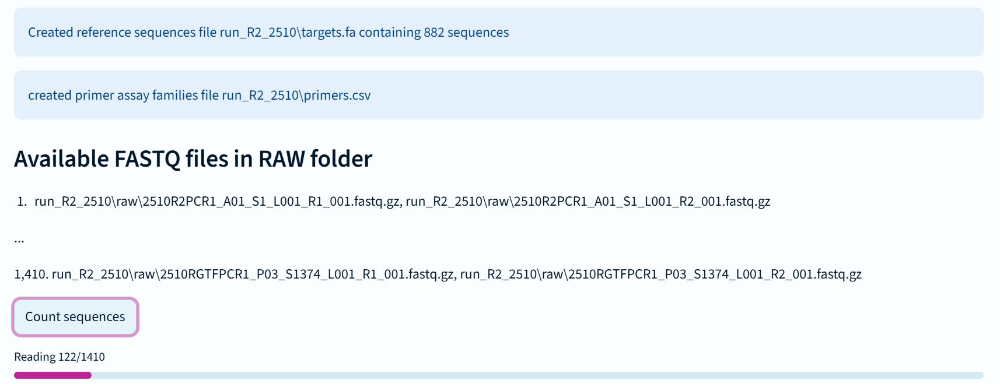
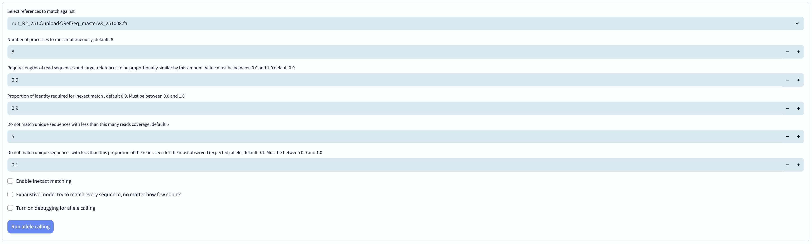
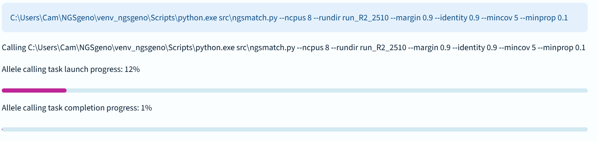
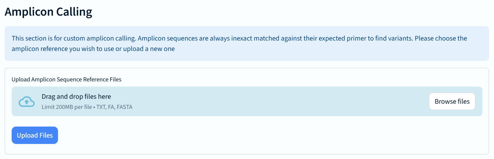
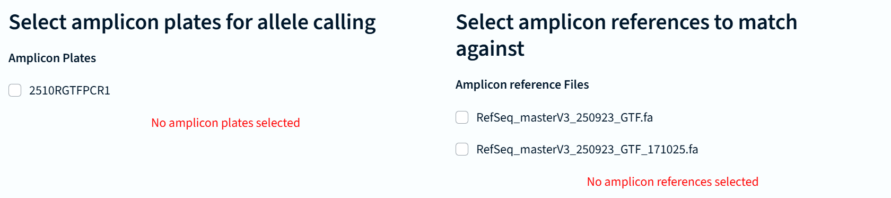
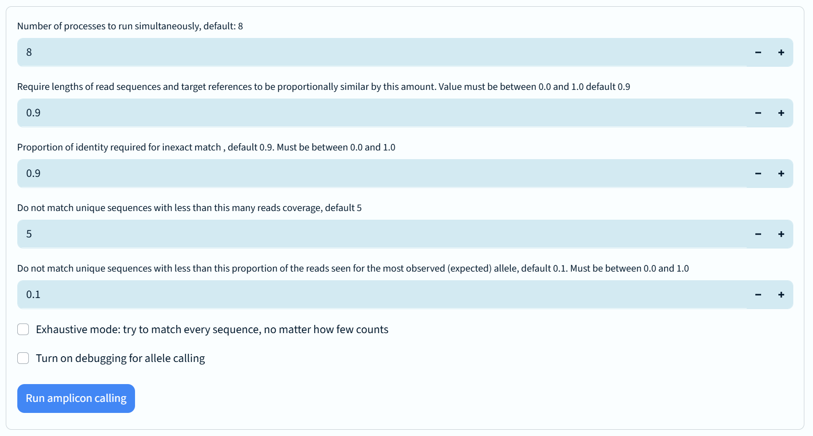
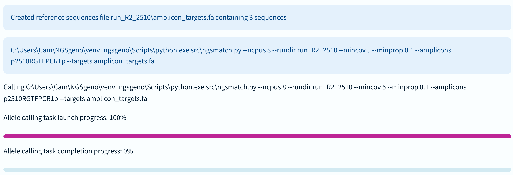

The sixth stage of the NGS genotyping pipeline involves calling and counting alleles from the sequencing data.

There are two tabs at the Alleles stage - "Allele Calling for Rodentity Mice" and "Amplicon Calling for custom amplicons"
The upper info viewer panels default to Files and Plates as the most relevant items to track, but it's unlikely to be very useful in practice here.
This is the main NGS Genotyping pipeline tab for calling (identifying and counting) sequences for each sample/assay well.

The first widget displays the first and last (alphanumerically ordered) FASTQ file that have been manually copied to the "raw" subfolder within the experiment/run folder.
There is also a button here which will launch a count all the available raw sequences in the FASTQ files, which is a useful indicator of overall sequencing success.
It may take a few minutes to count all the sequences seen in a large genotyping run with thousands of files. Here is an example of the counts progressing:

You can see in this example that there are also messages announcing that the "targets.fa" and "primers.csv" files have been created. These are required by the allele calling process.

Next is the panel of options for the allele calling process. Before we discuss each option, here's a quick explanation about what happens when the "Run allele calling" button is pressed
With that in mind, let's go over these options:
The values for these parameters reset to the defaults after every calling run.
If you are still unclear about the meaning of any of these settings you can read the technical details page for allele calling/matching, but it's probably better to trust the defaults
When you are ready, click the button labelled "Allele calling"
You will soon see a progress bar widget that displays both the assignment of tasks to available computational processes, and another bar showing the actual task completion.

Depending on your settings it can take a few minutes to exact match a full set of mouse genotypes, and 10-15 minutes if also inexact matching.
Amplicon calling is slightly different from regular genotyping in that it always uses inexact matching to let clients explore the variety of sequences that may be present across an amplicon locus.
The interface is also designed around an expectation that there could be amplicon plates present from different clients simultaneously, each requiring a different reference to match against.

The first widget here is for uploading an extra amplicon reference files that might be needed for matching.

Next users can chose the combination of amplicon plates and references that are to be matched.
Amplicon matching options are essentially the same as for the genotyping workflow, with the only real changes being 1) that inexact matching is always performed for alleles, and 2) assay names are used to identify reference sequence names, rather than the usual primer names.
Please refer to the Allele calling tab detailed above for descriptions of the calling options.

Once you have set an parameters required, click on "Run amplicon calling" to launch the processing of amplicon sequences.
The progress bars are the same as for the genotyping workflow:

Those with sharp eyes will notice some differences in the command line that is displayed compared to the genotyping command line
Each amplicon plate may take approximately one minute to process